聊聊编程范式
作者：张晓龙
编程范式一词最早来自 Robert Floyd 在 1979 年图灵奖的颁奖演说，是程序员看待程序应该具有的观点，代表了程序设计者认为程序应该如何被构建和执行的看法，与软件建模方式和架构风格有紧密关系。
现在主流的编程范式有三种：
这几种编程范式之间的关系如下：
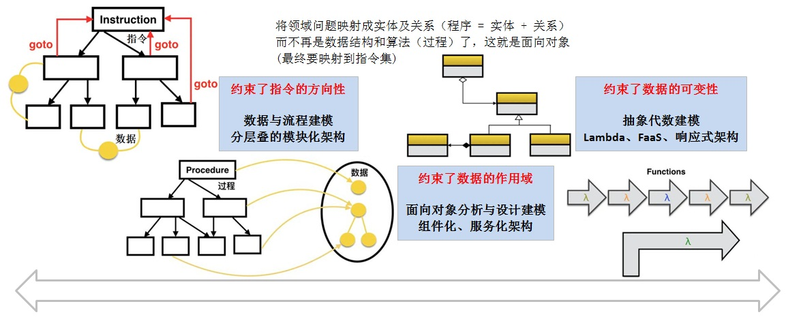
如果你对上图中编程范式之间的关系已理解得非常透彻，那就没有必要再往下看了，否则建议耐心看完本文，在过程中可以跳过熟悉的章节。
众所周知，计算机运行在图灵机模型之上。最初，程序员通过纸带将指令和数据输入到计算机，计算机执行指令，完成计算。后来，程序员编写程序（包括指令和数据），将程序加载到计算机，计算机执行指令，完成计算。时至今日，软件已经非常复杂，规模也很大，人们通过软件来解决各个领域（Domain）的问题，比如通信，嵌入式，银行，保险，交通，社交，购物等。
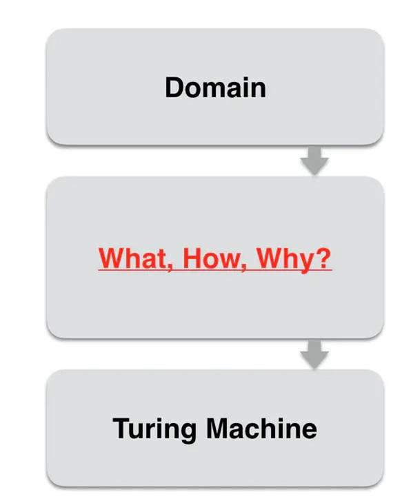
人们把一个个具体的领域问题跑在图灵机模型上，然后做计算，而领域问题和图灵机模型之间有一个很大的 gap（What，How，Why），这是程序员主要发挥的场所。编程范式是程序员的思维底座，决定了设计元素和代码结构。程序员把领域问题映射到某个编程范式之上，然后通过编程语言来实现。显然，编程范式到图灵机模型的转化都由编译器来完成，同时这个思维底座越高，程序员做的就会越少。
你可能会有一个疑问：为什么会有多个编程范式？换句话说，就是程序员为什么需要多个思维底座，而不是一个？
思维底座取决于程序员看待世界的方式，和哲学及心理学都有关。程序员开发软件是把现实中的世界模拟到计算机中来运行，每个程序员在这个时候都相当于一个造物主，在计算机重新创造一个特定领域的世界，那么如何看待这个世界就有些哲学观的味道在里面。这个虚拟世界的最小构筑物是什么？每个构筑物之间的关系是什么？用什么方式把这个虚拟世界层累起来。随着科学技术的演进，人们看待世界的方式会发生变化，比如生物学已经演进到细胞，自然科学已经演进到原子，于是程序员模拟世界的思维底座也会发生变化。
程序员模拟的世界最终要跑在图灵机模型上，这就有经济学的要求，成本越小越好。资源在任何时候都是有限的，性能是有约束的，不同的编程范式有不同的优缺点，程序员在解决领域问题时需要有多个思维底座来进行权衡取舍，甚至融合。
为了能更深刻的理解编程范式，我们接下来一起回顾一下编程范式的简史。
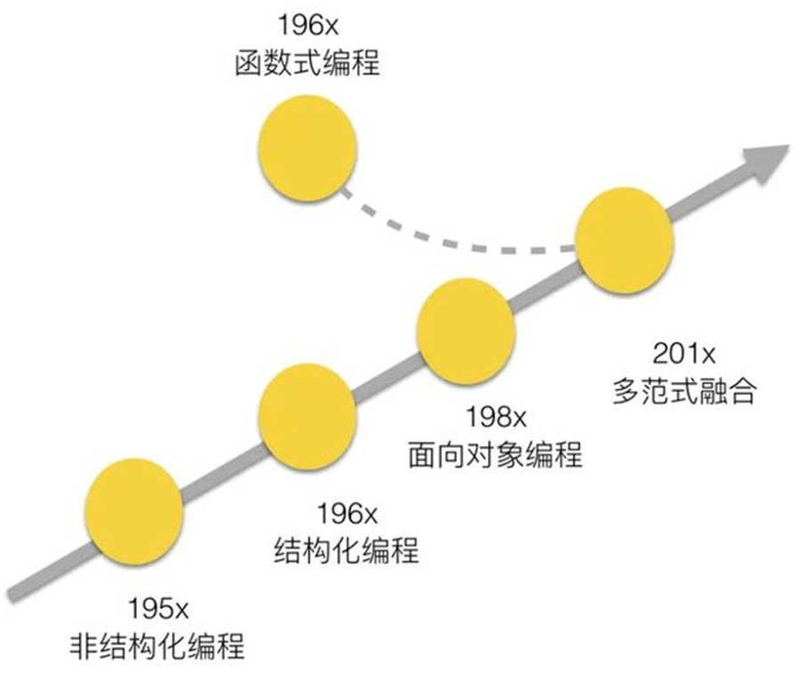
机器语言使用 0 和 1 组成的二进制序列来表达指令，非常晦涩难懂。汇编语言使用助记符来表达指令，虽然比机器语言进步了一些，但编写程序仍然是一件非常痛苦的事情。汇编语言可以通过汇编（编译）得到机器语言，机器语言可以通过反汇编得到汇编语言。汇编语言和机器语言一一对应，都是直接面向机器的低级语言，最贴近图灵机模型。
站在结构化编程的视角，机器语言和汇编语言也是有编程范式的，它们的编程范式就是非结构化编程。当时 goto 语句满天飞，程序及其难以维护。后来，大家对于 goto 语句是有害的达成了共识，就从编程语言设计上把 goto 语句拿掉了。
随着计算机技术的不断发展，人们开始寻求与机器无关且面向用户的高级语言。无论何种机型的计算机, 只要配备上相应高级语言的编译器，则用该高级语言编写的程序就可以运行。首先被广泛使用的高级语言是 Fortran，有效的降低了编程门槛，极大的提升了编程效率。后来 C 语言横空出世，它提供了对于计算机而言较为恰当的抽象，屏蔽了计算机硬件的诸多细节，是结构化编程语言典型代表。时至今日，C 语言依然被广泛使用。
当高级语言大行其道以后，人们开发的程序规模逐渐膨胀，这时如何组织程序变成了新的挑战。有一种语言搭着 C 语言的便车将面向对象的设计风格带入主流视野，这就是 C++，它完全兼容 C 语言。在很长一段时间内，C++ 风头十足，成为行业中最主流的编程语言。后来，计算机硬件的能力得到了大幅提升，Java 语言脱颖而出。Java 语言假设程序的代码空间是开放的，在 JVM 虚拟机上运行，一方面支持面向对象，另一方面支持 GC 功能。
不难看出，编程语言的发展就是一个逐步远离计算机硬件，向着待解决的领域问题靠近的过程。所以，编程语言后续的发展方向就是探索怎么更好的解决领域问题。
前面说的这些编程语言只是编程语言发展的主流路径，其实还有一条不那么主流的路径也一直在发展，那就是函数式编程语言，这方面的代表是 Lisp。首先，函数式编程的主要理论基础是 Lambda 演算，它是图灵完备的；其次，函数式编程是抽象代数思维，更加接近现代自然科学，使用一种形式化的方式来解释世界，通过公式来推导世界，极度抽象（比如 F=ma）。在这条路上，很多人都是偏学术风格的，他们关注解决方案是否优雅，如何一层层构建抽象。他们也探索更多的可能，垃圾回收机制就是从这里率先出来的。但函数式编程离图灵机模型太远了，在图灵机上的运行性能得不到直接的支撑，同时受限于当时硬件的性能，在很长一段时间内，这条路上的探索都只是学术圈玩得小众游戏，于是函数式编程在当时被认为是一个在工程上不成熟的编程范式。当硬件的性能不再成为阻碍，如何解决问题开始变得越来越重要时，函数式编程终于和编程语言发展的主流路径汇合了。促进函数式编程引起广泛重视还有一些其他因素，比如多核 CPU 和分布式计算。
编程范式是抽象的，编程语言是具体的。编程范式是编程语言背后的思想，要通过编程语言来体现。编程范式的世界观体现在编程语言的核心概念中，编程范式的方法论体现在编程语言的表达机制中，一种编程语言的语法和风格与其所支持的编程范式密切相关。虽然编程语言和编程范式是多对多的关系，但每一种编程语言都有自己的主流编程范式。比如，C 语言的主流编程范式是结构化编程，而 Java 语言的主流编程范式是面向对象编程。程序员可以打破“次元壁”，将不同编程范式中的优秀元素吸纳过来，比如在 linux 内核代码设计中，就将对象元素吸纳了过来。无论在以结构化编程为主的语言中引入面向对象编程，还是在以面向对象编程为主的语言中引入函数式编程，在一个程序中应用多范式已经成为一个越来越明显的趋势。不仅仅在设计中，越来越多的编程语言逐步将不同编程范式的内容融合起来。C++ 从 C++ 11 开始支持 Lambda 表达式，Java 从 Java 8 开始支持 Lambda 表达式，同时新诞生的语言一开始就支持多范式，比如 Scala，Go 和 Rust 等。
从结构化编程到面向对象编程，再到函数式编程，离图灵机模型越来越远，但抽象程度越来越高，与领域问题的距离越来越近。
结构化编程，也称作过程式编程，或面向过程编程。
基本设计
在使用低级语言编程的年代，程序员站在直接使用指令的角度去思考，习惯按照自己的逻辑去写，指令之间可能共享数据，这其中最方便的写法就是需要用到哪块逻辑就 goto 过去执行一段代码，然后再 goto 到另外一个地方。当代码规模比较大时，就难以维护了，这种编程方式便是非结构化编程。
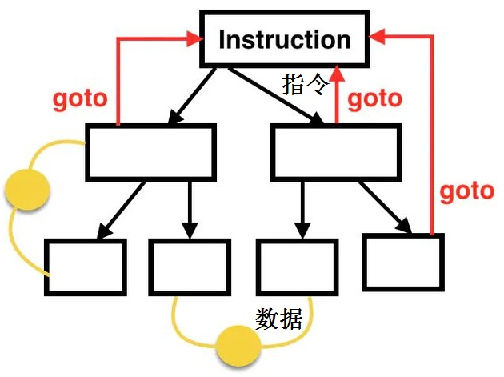
迪克斯特拉（E.W.dijkstra）在 1969 年提出结构化编程，摒弃了 goto 语句，而以模块化设计为中心，将待开发的软件系统划分为若干个相互独立的模块，这样使完成每一个模块的工作变得单纯而明确，为设计一些较大的软件打下了良好的基础。按照结构化编程的观点，任何算法功能都可以通过三种基本程序结构（顺序、选择和循环）的组合来实现。
结构化编程主要表现在以下三个方面：
结构化程序设计是用计算机的思维方式去处理问题，将数据结构和算法分离（程序 = 数据结构 + 算法）。数据结构描述待处理数据的组织形式，而算法描述具体的操作过程。我们用过程函数把这些算法一步一步的实现，使用的时候一个一个的依次调用就可以了。
在三种主流的编程范式中，结构化编程离图灵机模型最近。人们学习编程的时候，大多数都是从结构化编程开始。按照结构化编程在做设计时，也是按照指令和状态（数据）两个纬度来考虑。在指令方面，先分解过程 Procedure，然后通过 Procedure 之间的一系列关系来构建整个计算，对应算法（流程图）设计。在状态方面，将实例数据都以全局变量的形式放在模块的静态数据区，对应数据结构设计。
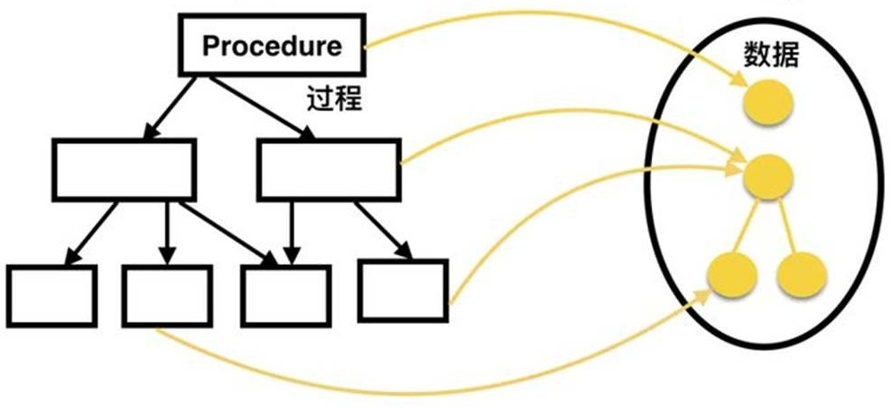
架构风格
结构化编程一般偏底层，一般适用于追求确定性和性能的系统软件。这类软件偏静态规划，需求变化也不频繁，适合多人并行协作开发。将软件先分完层和模块，然后再确定模块间的 API，接着各组就可以同时启动开发。各组进行数据结构设计和算法流程设计，并在规定的时间内进行集成交付。分层模块化架构支撑了软件的大规模并行开发，且偏静态规划式开发交付。层与层之间限定了依赖方向，即层只能向下依赖，但同层内模块之间的依赖却无法约束，经常会出现模块之间互相依赖的情况，导致可裁剪性和可复用性过粗，响应变化能力较弱。
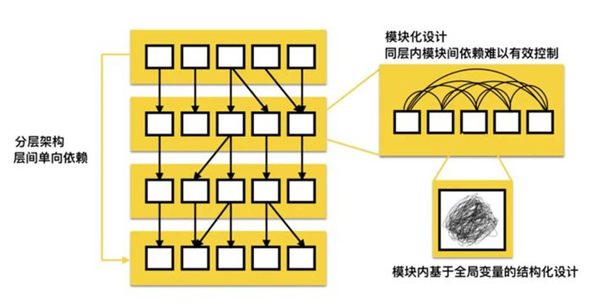
结构化编程的优点：
结构化编程的缺点：
刚才在优点中提到，结构化编程贴近图灵机模型，可以充分调动硬件，控制性强。为什么我们需要这个控制性？你可能做过嵌入式系统的性能优化，你肯定知道控制性是多么重要。你可能要优化版本的二进制大小，也可能要优化版本的内存占用，还有可能要优化版本的运行时效率，这时你如果站在硬件怎么运行的最佳状态来思考优化方法，那么与图灵机模型的 gap 就非常小，则很容易找到较好的优化方法来实施较强的控制性，否则中间有很多抽象层，则很难找到较好的优化方法。
除过性能，确定性对于系统软件来说也很重要。对于 5G，系统要求端到端时延不超过 1ms，我们不能 80% 的情况时延是 0.5ms，而 20% 的情况时延却是 2ms。卖出一个硬件，给客户承诺可以支持 2000 用户，我们不能 80% 的情况可以支持 3000 用户，而 20% 的情况仅支持 1000 用户。静态规划性在某些系统软件中是极度追求的，这种确定性需要对底层的图灵机模型做很好的静态分解，然后把我们的程序从内存到指令和数据一点点映射下去。因为结构化编程离图灵机模型较近，所以映射的 gap 比较小，容易通过静态规划达成这种确定性。
随着软件种类的不断增多，软件规模的不断膨胀，人们希望可以更小粒度的对软件进行复用和裁剪。
基本设计
将全局数据拆开，并将数据与其紧密耦合的方法放在一个逻辑边界内，这个逻辑边界就是对象。用户只能访问对象的 public 方法，而看不到对象内部的数据。对象将数据和方法天然的封装在一个逻辑边界内，可以整体直接复用而不用做任何裁剪或隐式关联。
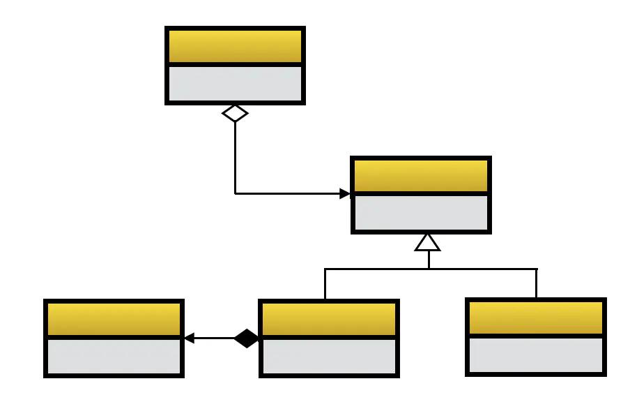
人们将领域问题又开始映射成实体及关系（程序 = 实体 + 关系），而不再是数据结构和算法（过程）了，这就是面向对象编程，核心特点是封装、继承和多态。
封装是面向对象的根基，它将紧密相关的信息放在一起，形成一个逻辑单元。我们要隐藏数据，基于行为进行封装，最小化接口，不要暴露实现细节。
继承分为两种，即实现继承和接口继承。实现继承是站在子类的视角看问题，而接口继承是站在父类的视角看问题。很多程序员把实现继承当作一种代码复用的方式，但这并不是一种好的代码复用方式，推荐使用组合。
对于面向对象而言，多态至关重要，接口继承是常见的一种多态的实现方式。正因为多态的存在，软件设计才有了更大的弹性，能够更好地适应未来的变化。只使用封装和继承的编程方式，我们称之为基于对象编程，而只有把多态加进来，才能称之为面向对象编程。可以这么说，面向对象设计的核心就是多态的设计。
面向对象编程诞生后，程序员需要从领域问题映射到实体和关系这种模型，后续再映射到图灵机模型就交给面向对象编程语言的编译器来完成。于是问题来了，领域千差万别，如何能将领域问题高效简洁的映射到实体和关系？这时 UML（Unified Model Language，统一建模语言）应运而生，是由一整套图表组成的标准化建模语言。可见，面向对象极大的推进了软件建模的发展。
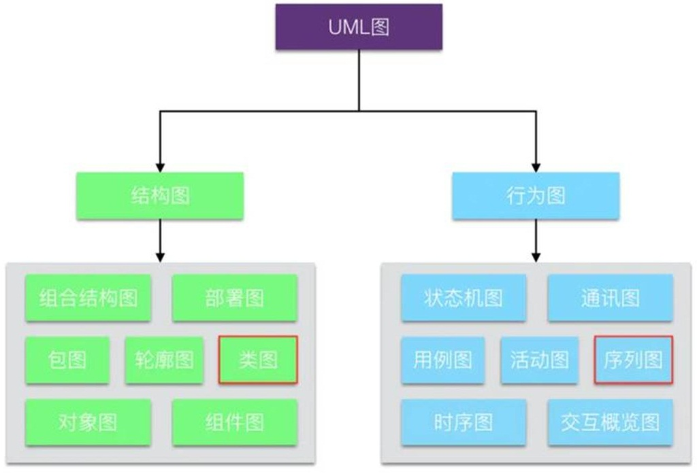
现在有一些新的程序员对于 UML 不太熟悉，建议至少要掌握两个 UML 图，即类图和序列图：
软件设计一般从动态图开始，在动态交互中会把相对比较固定的模式下沉到静态视图里，然后形成类和结构。在看代码的时候，通过类和结构就知道一部分对象和交互的信息了，可以约束及校验对象和交互的关系。
面向对象建模一般分为四个步骤：
在 OOA 阶段，分析师产出分析模型。同理，在 OOD 阶段，设计师产出设计模型。
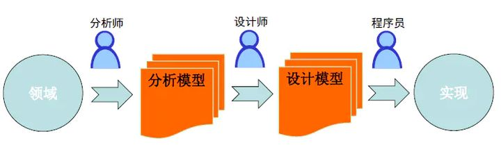
分析模型和设计模型的分离，会导致分析师头脑中的业务模型和设计师头脑中的业务模型不一致，通常要映射一下。伴随着重构和 fix bug 的进行，设计模型不断演进，和分析模型的差异越来越大。有些时候，分析师站在分析模型的角度认为某个需求较容易实现，而设计师站在设计模型的角度认为该需求较难实现，那么双方都很难理解对方的模型。长此以往，在分析模型和设计模型之间就会存在致命的隔阂，从任何活动中获得的知识都无法提供给另一方。
Eric Evans 在 2004 年出版了 DDD（领域驱动设计, Domain-Driven Design）的开山之作《领域驱动设计——软件核心复杂性应对之道》，抛弃将分析模型与设计模型分离的做法，寻找单个模型来满足两方面的要求，这就是领域模型。许多系统的真正复杂之处不在于技术，而在于领域本身，在于业务用户及其执行的业务活动。如果在设计时没有获得对领域的深刻理解，没有将复杂的领域逻辑以模型的形式清晰地表达出来，那么无论我们使用多么先进多么流行的平台和基础设施，都难以保证项目的真正成功。
DDD 是对面向对象建模的演进，核心是建立正确的领域模型：
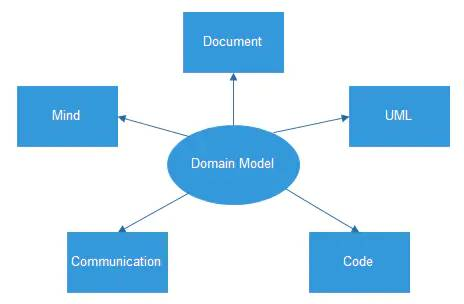
DDD 的精髓是对边界的划分和控制，共有四重边界：
设计原则很多，程序员最常使用的是 SOLID 原则，它是一套比较成体系的设计原则。它不仅可以指导我们设计模块（类），还可以被当作一把尺子，来衡量我们设计的有效性。
SOLID 原则是五个设计原则首字母的缩写，它们分别是：
前面我们提到，对于面向对象来说，核心是多态的设计，我们看看 SOLID 原则如何指导多态设计：
除过设计原则，我们还要掌握常用的设计模式。设计模式是针对一些普遍存在的问题给出的特定解决方案，使面向对象的设计更加灵活和优雅，从而复用性更好。学习设计模式不仅仅要学习代码怎么写，更重要的是要了解模式的应用场景。不论那种设计模式，其背后都隐藏着一些“永恒的真理”，这个真理就是设计原则。的确，还有什么比原则更重要呢？就像人的世界观和人生观一样，那才是支配你一切行为的根本。可以说，设计原则是设计模式的灵魂。
守破离是武术中一种渐进的学习方法：
设计模式的学习也是一个守破离的过程：
面向对象设计大行其道以后，组件化或服务化架构风格开始流行起来。组件化或服务化架构风格参考了对象设计：对象有生命周期，是一个逻辑边界，对外提供 API；组件或服务也有生命周期，也是一个逻辑边界，也对外提供 API。在这种架构中，应用依赖导致原则，不论高层还是低层都依赖于抽象，好像整个分层架构被推平了，没有了上下层的关系。不同的客户通过“平等”的方式与系统交互，需要新的客户吗？不是问题，只需要添加一个新的适配器将客户输入转化成能被系统 API 所理解的参数就行。同时，对于每种特定的输出，都有一个新建的适配器负责完成相应的转化功能。
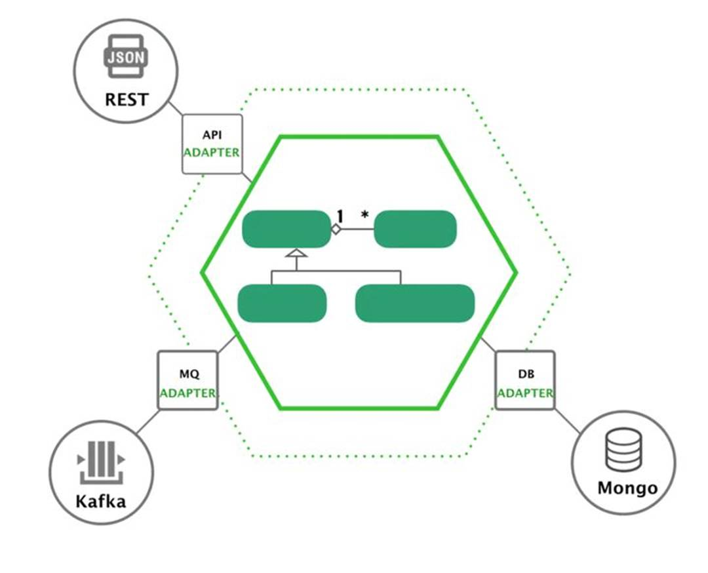
面向对象编程的优点：
面向对象编程的缺点：
与结构化编程与面向对象编程不同，函数式编程对很多人来说要陌生一些。你可能知道，C++ 和 Java 已经引入了 Lambda 表达式，目的就是为了支持函数式编程。函数式编程中的函数不是结构化编程中的函数，而是数学中的函数，结构化编程中的函数是一个过程（Procedure）。
基本设计
函数式编程的起源是数学家 Alonzo Church 发明的 Lambda 演算（Lambda calculus，也写作 λ-calculus）。所以，Lambda 这个词在函数式编程中经常出现，你可以把它简单地理解成匿名函数。
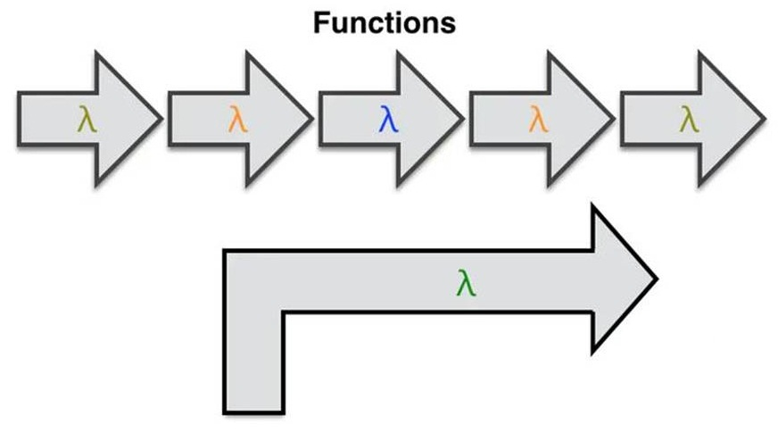
函数式编程有很多特点：
函数式编程还有两个重要概念：高阶函数和闭包。所谓高阶函数，是指一种比较特殊的函数，它们可以接收函数作为输入，或者返回一个函数作为输出。闭包是由函数及其相关的引用环境组合而成的实体，即闭包 = 函数 + 引用环境。
闭包有独立生命周期，能捕获上下文（环境）。站在面向对象编程的角度，闭包就是只有一个接口（方法）的对象，即将单一职责原则做到了极致。可见，闭包的设计粒度更小，创建成本更低，很容易做组合式设计。在面向对象编程中，设计粒度是一个 Object，它可能还需要拆，但你可能已经没有意识再去拆，那么上帝类大对象就会存在了，创建成本高。在函数式编程中，闭包给你一个更精细化设计的能力，一次就可以设计出单一接口的有独立生命周期的可以捕获上下文的原子对象，天然就是易于组合易于重用的，并且是易于应对变化的。
有一句话说的很好：闭包是穷人的对象，对象是穷人的闭包。有的语言没有闭包，你没有办法，只能拿对象去模拟闭包。又有一些语言没有对象，但单一接口不能完整表达一个业务概念，你没有办法，只能将多个闭包组合在一起当作对象用。
对于函数式编程，数据是不可变的，所以一般只能通过模式匹配和递归来完成图灵计算。当程序员选择将函数式编程作为思维底座时，就需要解决如何将领域问题映射到数据和函数（程序 = 数据 + 函数）。
函数式设计的思路就是高阶函数与组合，背后是抽象代数那一套逻辑。下面这张图是关于高阶函数的，左边是将函数作为输入，右边是将函数作为输出：
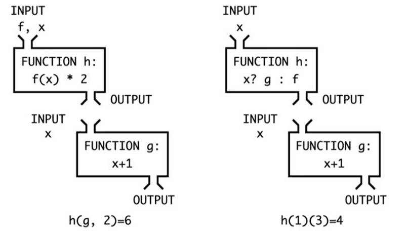
对于将函数作为输入的高阶函数，就是面向对象的策略模式。对于将函数作为输出的高阶函数，就是面向对象的工厂模式。每个高阶函数都是职责单一的，所以函数式设计是以原子的方式通过策略模式和工厂模式来组合类似面向对象的一切。在这个过程中，到底哪些函数作为入参，哪些函数作为返回值，然后这些返回值函数再传给哪些函数，接着再返回哪些函数......，你发现你在套公式，通过公式的层层嵌套完成一个算法的描述，所以核心就是设计有哪些高阶函数以及它们的组合规则，这是函数式设计中最难的，就是抽象代数的部分。可见，函数式设计的基本方法为：借助闭包的单一接口的标准化和高阶函数的可组合性，通过规则串联设计，完成数据从源到结果的映射描述。这里的映射是通过多个高阶函数的形式化组合完成，描述就像写数学公式一样放在那，等源数据从一头传入，然后经过层层函数公式的处理，最后变成你想要的结果。数据在形式化转移的过程中，不仅仅包括数据本身，还包括规则的创建、返回和传递。
架构风格
前面我们讲过，函数式编程引起人们重视的因素包括硬件性能提升，多核 CPU 和分布式计算等。函数式编程的一些特点，使得并发程序更容易写了。一些架构风格，尤其是分布式系统的架构风格，借鉴了函数式的特点，使得系统的扩展性和弹性变得更容易。
函数式编程的建模方式是抽象代数，在上面层累出两类架构风格：
（1）Event Sourcing，Reative Achitecture
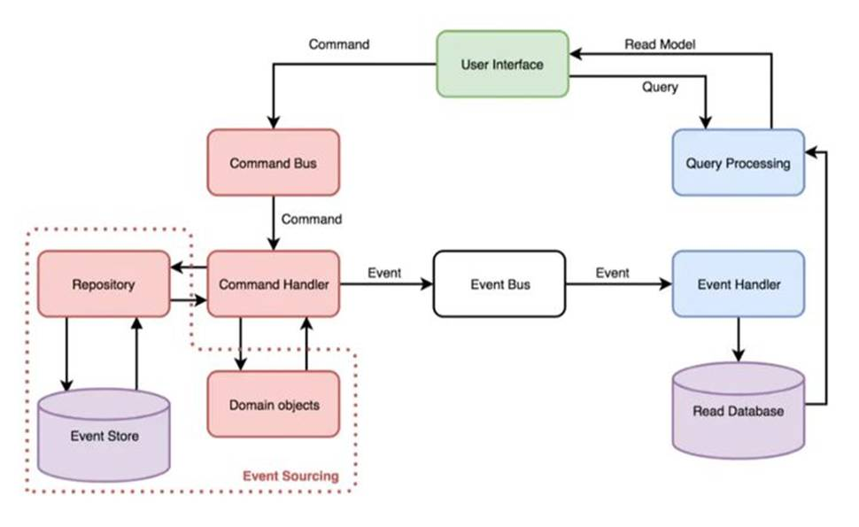
（2）Lambda Achitecture，FaaS，Serverless
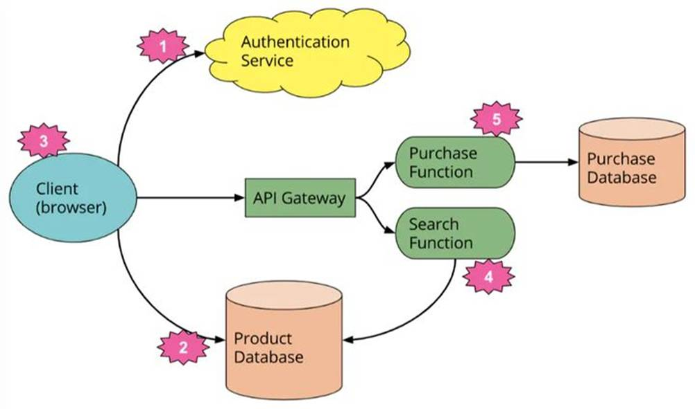
借鉴函数式编程的理念，分布式系统的架构风格，在架构层面完成更高抽象力度的表达，在并发层面完成更好的弹性和可靠性。
函数式编程的优点：
函数式编程的缺点：
作为一个程序员，我们应该清楚每种编程范式的适用场景，在特定的场景下选择合适的范式来恰当的解决问题。
多范式融合的设计建议：
最后，我们重新看看开始的那张编程范式之间的关系图：
说明如下。
最早是非结构化编程，指令可以随便跳，数据可以随便引用。后来有了结构化编程，人们把 goto 语句去掉了，约束了指令的方向性，过程之间是单向的，但数据却是可以全局访问的。再到面向对象编程的时候，人们干脆将数据与其紧密耦合的方法放在一个逻辑边界内，约束了数据的作用域，靠关系来查找。最后到函数式编程的时候，人们约束了数据的可变性，通过一系列函数的组合来描述数据从源到目标的映射规则的编排，在中间它是无状态的。可见，从左边到右边，是一路约束的过程。
越往左边限制越少，越贴近图灵机模型，可以充分调动硬件，“直接”带来的可控性及广域适用性。对于可控性，因为离图灵机模型很近，可以按自己的想法来“直接”控制。对于广域适用性，因为约束越多，说明门槛越高，一旦右边搞不定，可以往回退一步，当你找到合理的对象模型或抽象代数模型时，可以再往前走一步。
越往右边限制越多，通过约束建立规则，通过规则描述系统，“抽象”带来的定域扩展性。对于定域，因为这种“抽象”一定是面向某一个狭窄的切面，找到的对象模型或抽象代数模型会有很强的扩展性和可理解性，但一旦超过这个范围，模型可能就无效了，所以 DDD 一直在强调分离子域、划分 BC 和分层架构。